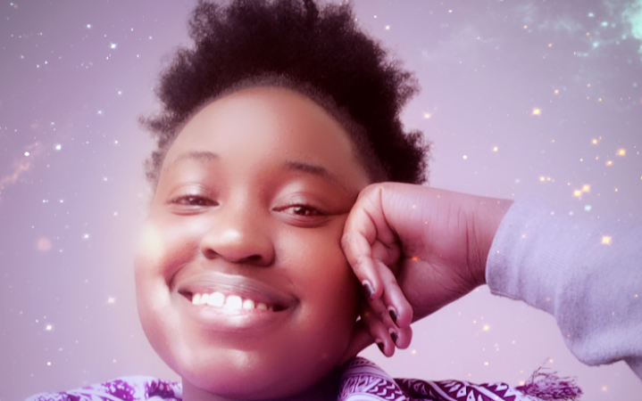

Irene Nyatichi is an upcoming Software Engineer, the firstborn of three. Currently she is a student in AkiraChix, an organization that aims to be the leading source of African female technology talent for the world, by facilitating training courses to select ladies every year. She is also learning Deutsch, Germany's official language and plans to visit Germany, Rwanda, Morocco and Mauritius. Irene enjoys watching movies, listening to music when in a low mood, reading novels during her free time.